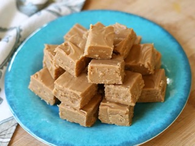

Easy Two Ingredient Peanut Butter Fudge

Desctription
This two-ingredient peanut butter fudge recipe seems too good to be true, but trust us: The sweet, creamy, and rich results it produces every time are very real.
Ingredients
These are the two ingredients you'll need for this shortcut peanut butter fudge recipe:
- Peanut butter: This incredibly easy two-ingredient peanut butter fudge starts with, of course, a jar of peanut butter. Make sure you buy creamy, not chunky.
- Cream cheese frosting: The genius secret ingredient? A container of store-bought whipped cream cheese frosting.
Steps
You'll be shocked when you learn how easy it is to make this two-ingredient peanut butter fudge. The full, step-by-step recipe can be found below — but here's a brief overview of what you can expect:
-
Combine the ingredients in a bowl.
-
Microwave for 30 seconds, stir, then microwave again.
-
Pour mixture into a prepared baking pan and chill until set.